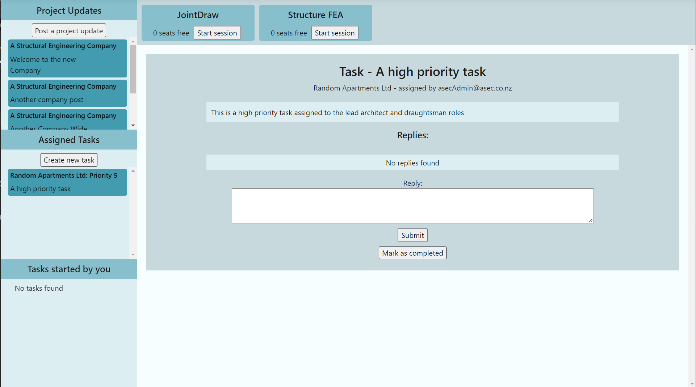

Structcha
Send me an email if you would like to try Structcha
Structcha is going to be a new format for engineering software in the structural engineer design process. It will offer a vast array of tools, beginning with joint detailing, project management and a simplified FEA system. The aim of this software package is to give the engineer, draughtsperson, or architect, the latest technology to ensure their projects progress as efficiently as possible.
The idea behind this software environment is allowing its users access to the vast amount of information required for the design and construction of engineering projects. With plans to have applications made for computers and mobile devices, it will have a vast amount of cross compatibility and can be accessed from in the office, out on the road, and at construction sites and factories. Therefore, everyone can access the current projects, and be up to date.
Structure can be divided into three sections:
- Web application (in an early alpha)
- CentreNode (beginning development)
- Structcha Applications (beginning development)
Each of these sections are explained below
Structcha Web App
Links to GitHub repository of the webapp
Interaction with the Structcha software environment starts with an in browser web app. This acts as a hub for Structcha, and allows users to login to the service. The main function for the web app is controlling and allowing user access to various items. These could be to project information, tasks set for the user, progress updates, management of other users, and to other Structcha applications.
The basis of this webapp is a place for information to be shared efficiently throughout a company and its contractors. Each company is registered with an admin user who has the ability to add new users to the company when they register using a company email, assign roles to those users, and adjust access to applications for different roles.
This webapp is adjusted to suit the role that the user plays in the company. Users can have multiple roles, each of which allow different functionality. Various upper management roles allow for the creation of projects for the company and assign users and roles to it. Managers and role leads, such as lead structural engineers, can create and assign tasks for their projects and specifically assign the users.

Projects can also have more generic posts which can be shared throughout roles and projects. This allows for project developments and news to be shared throughout the company quickly. Further functionality to be included in the future is the ability to include images and videos in these posts and tasks, and an easy method to share links to Structcha files as well. This will hopefully have the added benefit of making contacting people onsite simple, meaning any issues or required correspondence can be completed quickly.
The last major function of the web application is to start and stop Structure app sessions. These sessions allow users to share the seats for the specific Structure app which are purchased by the company. This allows for simple sharing of the seats, allowing for a lower overall price for the company. The opportunity to charge the company by the minute is also an option using this app session functionality. More on this in the below sections.
CentreNode
Link to GitHub repository of CentreNode
Note: CentreNode is currently under design
CentreNode (Working title) is the contact point between the Structure servers and the locally installed applications. Through this application a secure method of accessing files is created, where the user can work on project files as desired. The aim is to have something similar to google docs where multiple users can work on the file at once, and can collaborate with each other on the same section.
This shows all the Structure app sessions currently open by the logged in user, and allows the accompanying application to be started, or the session to be closed. Some applications require processing power on the cloud, and the progress will be displayed on CentreNode.
Applications
As with the CentreNode app, these too are only in a planning stage. The Structcha software suite is aiming to provide SaaS cloud capability within the engineering field, leading to a more efficient design method.
Drafting and Detailing
A large amount of time is devoted to drafting and detailing. Structcha plans to have an assortment of apps available, specifically for the design of structural joints. Specialised applications for steel, concrete and timber are being created, as well as a version which incorporates all materials for composite joints.
Engineering Analysis
With these applications being very heavy on computer resources, moving the processing and calculations to a datacenter and operating the applications as a SaaS will give much quicker analysis time for the client, and access to great processing power. Both lead to lower costs for the company. The two applications being worked on initially are a SAP (structural analysis program) for overall building static and dynamic analysis, and a simplified FEA (finite element analysis) program, specifically designed for analysis of structural joints.
Advanced Management
It is important to have good management tools for engineering, where all people involved are well informed about tasks and updates, and all information is available when needed. Keeping track of projects and ability to request for updates and set deadlines are just some of the features which are going to be incorporated into these applications. Structure is planning on having multiple specialised management applications, including engineering, logistics and fabrication.